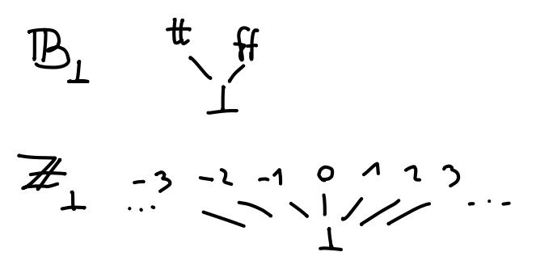
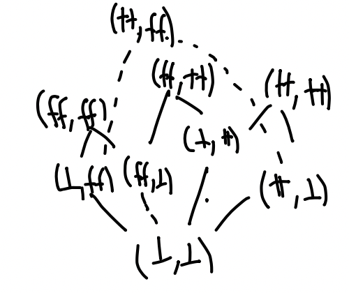

Domene
Contents
Domene¶
Pri interpretaciji izrazov nismo omenjali rekurzije. Spomnimo se, da jo lahko uvedemo z izrazom \(\kwdpre{rec} f \, x . M\), za katerega velja
Če bi želeli skladnost denotacijske semantike z operacijsko, bi torej moralo veljati
Na primer, če za \(M\) vzamemo \(x + \intsym{1}\), za \(V\) pa \(\intsym{0}\), dobimo
kar seveda ni res. V splošnem pa nam enačba pove, da ima (malo preurejeni) \(\itp{M}\) vedno fiksno točko. To za množice in preslikave med njimi seveda ne velja. Smo pa fiksne točke že konstruirali v poglavju o indukciji, kjer smo imeli monotono preslikavo na množicah \(F\), ki smo jo iterirali na prazni množici \(\emptyset\), da smo dobili množico \(I = \bigcup_{n = 0}^{\infty} F^i(\emptyset)\), za katero je veljalo \(F I = I\). Podoben postopek želimo narediti v splošnem, kar nas pripelje do definicije domen.
Domene¶
Zaporedje \((x_i)_{i \in \mathbb{N}}\) v delno urejeni množici \(D\) je veriga, če za vsak \(i \in \mathbb{N}\) velja \(x_i \le x_{i + 1}\).
Delno urejena množica \((D, \le)\) je domena, če:
obstaja najmanjši element \(\bot_D\), ki ga imenujemo dno, za katerega velja \(\bot_D \le x\) za vsak \(x \in D\).
ima vsaka veriga \((x_i)_i\) natančno zgornjo mejo, ki jo označimo z \(\bigvee_i x_i\).
Primeri domen so:
Interval \([0, 1]\) ali pa \([0, 1) \cup \{2\}\) z običajno urejenostjo \(\le\). Interval \((0, 1]\) ni domena, ker nima dna, interval \([0, 1)\) pa ne, ker veriga \((1 - \frac{1}{i + 1})_i\) nima supremuma.
Vsako množico \(A\) lahko razširimmo z dodatnim elementom \(\bot\). Na \(A_\bot = A + \{ \bot \}\), lahko definiramo urejenost \(\le\) kot \(x \le y \iff x = \iota_2(\bot) \lor x = y\). Pri zapisu elementov nismo pedantni, ampak namesto \(\iota_1(a)\) pišemo kar \(a\), namesto \(\iota_2(\bot)\) pa kar \(\bot\). Primer dvigov sta domeni \(\mathbb{B}_\bot\) ali \(\mathbb{Z}_\bot\), ki ju bomo še uporabljali in sta videti kot

Za poljubni domeni \((D_1, \le_1)\) in \((D_2, \le_2)\) lahko na kartezičnem produktu \(D_1 \times D_2\) definiramo urejenost
Preverimo lahko, da res dobimo domeno, ki ima za dno par \((\bot_{D_1}, \bot_{D_2})\). Skica domene \(\mathbb{B}_\bot \times \mathbb{B}_\bot\) je

Vzemimo domeni \((D_1, \le_1)\) in \((D_2, \le_2)\). Pravimo, da je preslikava \(f : D_1 \to D_2\) zvezna, če:
je monotona, torej iz \(x \le_1 y\) sledi \(f(x) \le_2 f(y)\), in
ohranja supremume verig, torej je \(f(\bigvee_i x_i) = \bigvee_i f(x_i)\) za vsako verigo \((x_i)_i\).
Pri tem desni supremum obstaja, ker je \(f\) monotona, zato je \((f(x_i))_i\) veriga v \(D_2\).
Trditev. Vzemimo domene \((D_1, \le_1)\), \((D_2, \le_2)\) in \((D_3, \le_3)\) ter zvezni preslikavi \(f : D_1 \to D_2\) in \(g : D_2 \to D_3\). Tedaj je \(g \circ f : D_1 \to D_3\) zvezna preslikava.
Dokaz. Preveriti moramo monotonost in ohranjanje supremumov:
Naj bo \(x \le_1 y\). Ker je \(f\) monotona, velja \(f(x) \le_2 f(y)\), zaradi monotonosti \(g\) pa še \(g(f(x)) \le_3 g(f(y))\).
Vzemimo verigo \((x_i)_i\). Tedaj je
■
Domene in zvezne preslikave zadoščajo lastnosti, ki jo potrebujemo za interpretacijo rekurzije: vsaka zvezna preslikava ima fiksno točko.
Izrek (Tarski). Naj bo \((D, \le)\) domena in \(f : D \to D\) zvezna preslikava. Tedaj ima \(f\) najmanjšo fiksno točko, ki jo označimo s \(\mathrm{fix} \, f\).
Dokaz. Vzemimo zaporedje \((x_i)_i\), definirano z \(x_i = f^i(\bot)\). Ker je \(x_0 = \bot \le f(\bot) = x_1\) in je \(f\) monotona, lahko z indukcijo pokažemo, da je \((x_i)_i\) veriga. Pokažimo, da je njen supremum \(x = \bigvee_i x_i\) najmanjša fiksna točka preslikave \(f\). Zaradi zveznosti \(f\) velja
saj dobimo isto verigo, le premaknjeno za en člen. Torej je \(x\) fiksna točka \(f\). Naj velja tudi \(f(y) = y\). Ker je \(x_0 = \bot \le y\), po indukciji velja tudi \(x_{i + 1} = f(x_i) \le f(y) = y\) za vse \(i\). Ker je celotna veriga pod \(y\), je pod \(y\) tudi supremum, torej \(x \le y\). ■
Tako kot smo prej tipe interpretirali z množicami, izraze pa s preslikavami med njimi, lahko vidimo, da bomo zdaj tipe interpretirali z domenami, izraze pa z zveznimi preslikavami. Za to najprej potrebujemo domeno, s katero bomo interpretirali funkcijski tip.
Vzemimo domeni \((D_1, \le_1)\) in \((D_2, \le_2)\). Na podmnožici vseh zveznih preslikav \(f : D_1 \to D_2\) definiramo ureditev
Preverimo lahko, da dobimo domeno, ki jo imenujemo domena zveznih preslikav in jo označimo z \([D_1 \to D_2]\). Pri dokazu potrebujemo sledečo lemo.
Lema. Vzemimo dvojno zaporedje \(x_{ij}\) v \(D\), da velja \(x_{ij} \le x_{i' j'}\) za vse \(i \le i'\) in \(j \le j'\). Tedaj velja
Dokaz. Ker za poljubna \(i\) in \(j\) velja \(x_{ij} \le x_{\max(i, j) \max(i, j)} \le \bigvee_k x_{kk}\), za poljuben \(i\) velja \(\bigvee_j x_{ij} \le \bigvee_k x_{kk}\) in zato tudi \(\bigvee_i \bigvee_j x_{ij}\). Obratno za poljuben \(k\) velja \(x_{kk} \le \bigvee_j x_{kj} \le \bigvee_i \bigvee_j x_{ij}\) torej dobimo neenakost tudi v drugo smer, zato velja \(\bigvee_i \bigvee_j x_{ij} = \bigvee_k x_{kk}\). Druga enakost velja zaradi simetrije. ■
Trditev. V domeni zveznih preslikav obstajajo supremumi poljubnih verig.
Dokaz. Vzemimo verigo \((f_i)_i\) v domeni zveznih preslikav \([D_1 \to D_2]\) in pokažimo, da ima supremum. Definirajmo funkcijo \(f\) s predpisom \(f(x) = \bigvee_i f_i(x)\). Ker je \((f_i)_i\) veriga, je veriga tudi \((f_i(x))_i\), zato je preslikava dobro definirana. Pokažimo, da je funkcija \(f\) tudi zvezna. Vzemimo verigo \((x_j)_j\). Tedaj velja
pri čemer smo uporabili definicijo \(f\), zveznost \(f_i\) ter lemo od prej. Tako velja \(f \in [D_1 \to D_2]\), pokazati pa moramo le še, da je \(f\) res supremum verige \((f_i)_i\).
Ker za poljubna \(x\) in \(i\) velja \(f_i(x) \le \bigvee_i f_i(x) = f(x)\), je \(f\) res zgornja meja verige \((f_i)_i\). Naj bo \(g\) zgornja meja verige \((f_i)_i\). Če za vsak \(i\) velja \(f_i \le g\), tedaj za vsak \(x\) velja \(f_i(x) \le g(x)\) in je zato \(f(x) = \bigvee_i f_i(x) \le g(x)\), torej je tudi \(f \le g\), s čimer je \(f\) res supremum verige \((f_i)_i\). ■
Interpretacije tipov in izrazov¶
Zdaj lahko ponovimo celotno zgodbo od prej. Za vsak tip \(A\) definiramo njegovo interpretacijo \(\itp{A}\), ki je domena, rekurzivno definirana kot:
Podobno definiramo interpretacijo kontekstov kot
saj vemo, da je tudi produkt domen domena. Izraza \(\Gamma \vdash M : A\) bomo interpretirali z zveznimi preslikavami
ki so podane s sledečimi predpisi:
kjer je \(+_\bot : \mathbb{Z}_\bot \times \mathbb{Z}_\bot \to \mathbb{Z}_\bot\) definiran kot
in podobno za \(\cdot_\bot\) in \(<_\bot\). Za vse preslikave moramo še preveriti, da so zvezne.